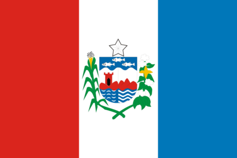

Conheça a região Nordeste do País
Alagoas

| População: |
3 127 511 hab. |
| Àrea: |
27 848,140 km² |
| PIB per capita: |
R$ 22.662,01 |
Alagoas, estrela radiosa,
Que refulge ao sorrir das manhãs,
Da República és filha donosa,
Maga Estrela entre estrelas irmãs.
A alma pulcra de nossos avós,
Como benção de amor e de paz,
Hoje paira, a fulgir, sobre nós,
E maiores, mais fortes nos faz.
Tu, liberdade formosa,
Gloriosa hosana entoas:
- Salve, ó terra vitoriosa,
- Glória à terra de Alagoas!
Esta terra que há que idolatre-a.
Mais que os filhos que filhos lhe são?
Nós beijamos o solo da Pátria,
Como outrora o romano varão!
Nesta terra de sonhos ardentes.
Só palpitam, como almas de sóes,
Corações, corações de valentes,
Almas grandes de grandes heróis!
Tu, liberdade formosa,
Triunfal hosana entoas:
- Salve, ó terra gloriosa,
- Berço de heróis! Alagoas!
Ide, algemas que o pulso prendias.
D’esta Pátria, outros pulsos prender!
Nestes céus, nas azuis serranias,
Nós, só livres, podemos viver...
E se a luta voltar, hão-de os bravos.
Ter a imagem da Pátria por fé!
Que Alagoas não procria escravos:
Vence ou morre!... Mas sempre de pé!
Tu, liberdade formosa,
Ridentes hinos entoas:
- Salve, ó terra grandiosa,
- De luz, de paz, Alagoas!
Salve, ó terra que entrando no templo,
Calma e ovante, da Indústria te vás;
Dando às tuas irmãs este exemplo,
De trabalho e progresso na paz!
Sús! os hinos de glórias já troam!...
A teus pés os rosais vêm florir!...
Os clarins e as fanfarras ressoam,
Te levando em triunfo ao porvir!
Tu, liberdade formosa,
Ao trabalho hosana entoas!
- Salve, ó terra futurosa,
- Glória à terra de Alagoas!
Conheça as regiões do Brasil
Norte
Centro Oeste
Sudeste
Sul